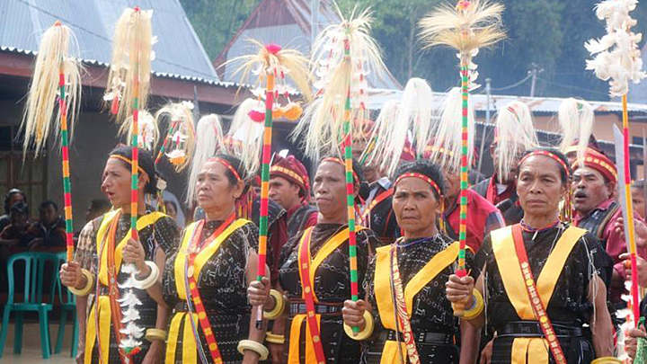

Festival Golo Koe
Perayaan tahunan di Labuan Bajo, Nusa Tenggara Timur, yang memadukan aspek spiritual (Katolik), budaya, dan pariwisata. Festival ini menampilkan berbagai kegiatan seperti prosesi laut patung Bunda Maria, karnaval budaya, pameran UMKM, pentas seni dan budaya, hingga Misa Agung, dengan tujuan merajut kebangsaan, keharmonisan, dan mempromosikan pariwisata berkelanjutan yang inklusif.

Ritual Reba
Budaya yang dianut oleh masyarakat petani suku Bajawa, yang sesungguhnya adalah pesta keluarga, pesta perdamaian dalam siklus pertanian suku Bajawa sebagaimana pesta adat lainnya pada masyarakat tradisional selalu bersifat totalitas.

Ritual Pasola
Ritual perang adat di Sumba, Nusa Tenggara Timur, yang melibatkan dua kelompok pria berkuda saling melempar lembing kayu tumpul. Ritual ini merupakan bagian dari upacara kepercayaan Marapu untuk merayakan musim tanam padi, memohon pengampunan, dan keberkahan hasil panen, di mana darah yang tertumpah dipercaya dapat menyuburkan tanah.